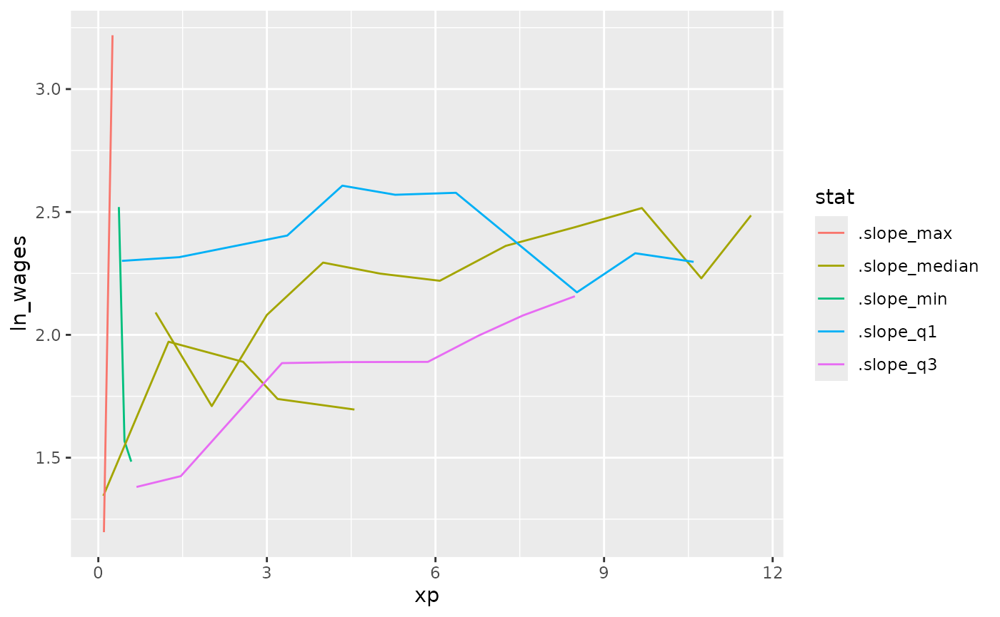

This vignette unpacks how to find interesting individuals.
Let’s say we calculate a slope for each individual key,
using keys_slope():
wages_slope <- key_slope(wages, ln_wages ~ xp)
wages_slope
#> # A tibble: 888 × 3
#> id .intercept .slope_xp
#> <int> <dbl> <dbl>
#> 1 31 1.41 0.101
#> 2 36 2.04 0.0588
#> 3 53 2.29 -0.358
#> 4 122 1.93 0.0374
#> 5 134 2.03 0.0831
#> 6 145 1.59 0.0469
#> 7 155 1.66 0.0867
#> 8 173 1.61 0.100
#> 9 206 1.73 0.180
#> 10 207 1.62 0.0884
#> # ℹ 878 more rowsThis is neat! But now we want to know those keys that
are nearest to some set of summary statistics of the
slope. By nearest here we mean which values have the
smallest numerical difference.
Let’s say the five number summary:
summary(wages_slope$.slope_xp)
#> Min. 1st Qu. Median Mean 3rd Qu. Max. NA's
#> -4.576923 -0.007637 0.047958 0.062350 0.094475 13.215686 38If want to find those individuals that have slopes near these values.
We can do this using keys_near(), which returns those
nearest to some summary statistics. In this case, it is the five number
summary. In the next section we describe how you can provide your own
named list of functions to use.
wages_slope_near <- wages_slope %>%
keys_near(key = id,
var = .slope_xp)
wages_slope_near
#> # A tibble: 6 × 5
#> id .slope_xp stat stat_value stat_diff
#> <int> <dbl> <fct> <dbl> <dbl>
#> 1 2305 0.0480 med 0.0480 0.0000498
#> 2 2594 -0.00768 q_25 -0.00769 0.0000127
#> 3 7918 -4.58 min -4.58 0
#> 4 10380 0.0479 med 0.0480 0.0000498
#> 5 12178 0.0946 q_75 0.0947 0.0000579
#> 6 12455 13.2 max 13.2 0We can then join this information back against the data and plot those interesting individuals:
wages_slope_near %>%
left_join(wages, by = "id") %>%
ggplot(aes(x = xp,
y = ln_wages,
group = id,
colour = stat)) +
geom_line()
You could also, with a bit of work, show these lines against the background using gghighlight
library(gghighlight)
wages %>%
left_join(wages_slope_near, by = "id") %>%
as_tibble() %>%
ggplot(aes(x = xp,
y = ln_wages,
group = id,
colour = stat)) +
geom_line() +
gghighlight(!is.na(stat))
Specify your own summaries for keys_near
You can specify your own list of summaries to pass to
keys_near. For example, you could create your own summaries
to give a sense of range. Note that the functions here start with
b_, and are b_summaries provided by
brolgar that have sensible defaults. You can read
about them here, or with ?b_summaries
l_ranges <- list(min = b_min,
range_diff = b_range_diff,
max = b_max,
iqr = b_iqr)
wages %>%
key_slope(formula = ln_wages ~ xp) %>%
keys_near(key = id,
var = .slope_xp,
funs = l_ranges)
#> # A tibble: 4 × 5
#> id .slope_xp stat stat_value stat_diff
#> <int> <dbl> <fct> <dbl> <dbl>
#> 1 7918 -4.58 min -4.58 0
#> 2 9357 0.103 iqr 0.102 0.000139
#> 3 12455 13.2 range_diff 17.8 4.58
#> 4 12455 13.2 max 13.2 0Implementation of keys_near
If you are interested in the specifics of how
keys_near() works, this section describes how it is
implemented in brolgar.
To get the data into the right format, there are a few steps.
First, we need to get the data into a format where we have all the statistics that we are interested in, along with the id, and the statistic of interest.
We can fit a linear model for each key in the dataset
using key_slope().
wages_slope <- key_slope(wages, ln_wages ~ xp)
wages_slope
#> # A tibble: 888 × 3
#> id .intercept .slope_xp
#> <int> <dbl> <dbl>
#> 1 31 1.41 0.101
#> 2 36 2.04 0.0588
#> 3 53 2.29 -0.358
#> 4 122 1.93 0.0374
#> 5 134 2.03 0.0831
#> 6 145 1.59 0.0469
#> 7 155 1.66 0.0867
#> 8 173 1.61 0.100
#> 9 206 1.73 0.180
#> 10 207 1.62 0.0884
#> # ℹ 878 more rowsWe can then perform a summary of the statistic of interest, in this case the slope.
wages_slope_all_stats <- wages_slope %>%
mutate_at(.vars = vars(.slope_xp),
.funs = list(.slope_min = b_min,
.slope_max = b_max,
.slope_median = b_median,
.slope_q1 = b_q25,
.slope_q3 = b_q75)) %>%
select(id,
starts_with(".slope"))
wages_slope_all_stats
#> # A tibble: 888 × 7
#> id .slope_xp .slope_min .slope_max .slope_median .slope_q1 .slope_q3
#> <int> <dbl> <dbl> <dbl> <dbl> <dbl> <dbl>
#> 1 31 0.101 -4.58 13.2 0.0480 -0.00769 0.0947
#> 2 36 0.0588 -4.58 13.2 0.0480 -0.00769 0.0947
#> 3 53 -0.358 -4.58 13.2 0.0480 -0.00769 0.0947
#> 4 122 0.0374 -4.58 13.2 0.0480 -0.00769 0.0947
#> 5 134 0.0831 -4.58 13.2 0.0480 -0.00769 0.0947
#> 6 145 0.0469 -4.58 13.2 0.0480 -0.00769 0.0947
#> 7 155 0.0867 -4.58 13.2 0.0480 -0.00769 0.0947
#> 8 173 0.100 -4.58 13.2 0.0480 -0.00769 0.0947
#> 9 206 0.180 -4.58 13.2 0.0480 -0.00769 0.0947
#> 10 207 0.0884 -4.58 13.2 0.0480 -0.00769 0.0947
#> # ℹ 878 more rowsWe then need to convert this into long format
wages_slope_all_stats_long <-
wages_slope_all_stats %>%
gather(key = "stat",
value = "stat_value",
-id,
-.slope_xp)
wages_slope_all_stats_long
#> # A tibble: 4,440 × 4
#> id .slope_xp stat stat_value
#> <int> <dbl> <chr> <dbl>
#> 1 31 0.101 .slope_min -4.58
#> 2 36 0.0588 .slope_min -4.58
#> 3 53 -0.358 .slope_min -4.58
#> 4 122 0.0374 .slope_min -4.58
#> 5 134 0.0831 .slope_min -4.58
#> 6 145 0.0469 .slope_min -4.58
#> 7 155 0.0867 .slope_min -4.58
#> 8 173 0.100 .slope_min -4.58
#> 9 206 0.180 .slope_min -4.58
#> 10 207 0.0884 .slope_min -4.58
#> # ℹ 4,430 more rowsWe can then calculate the difference between each stat and the slope,
.slope_xp:
stats_diff <-
wages_slope_all_stats_long %>%
mutate(stat_diff = abs(.slope_xp - stat_value))
stats_diff
#> # A tibble: 4,440 × 5
#> id .slope_xp stat stat_value stat_diff
#> <int> <dbl> <chr> <dbl> <dbl>
#> 1 31 0.101 .slope_min -4.58 4.68
#> 2 36 0.0588 .slope_min -4.58 4.64
#> 3 53 -0.358 .slope_min -4.58 4.22
#> 4 122 0.0374 .slope_min -4.58 4.61
#> 5 134 0.0831 .slope_min -4.58 4.66
#> 6 145 0.0469 .slope_min -4.58 4.62
#> 7 155 0.0867 .slope_min -4.58 4.66
#> 8 173 0.100 .slope_min -4.58 4.68
#> 9 206 0.180 .slope_min -4.58 4.76
#> 10 207 0.0884 .slope_min -4.58 4.67
#> # ℹ 4,430 more rowsWith stats diff, we can then group by the stat, and find
return those rows with the smallest difference between the statistic and
the value:
top_stats_diff <-
stats_diff %>%
group_by(stat) %>%
top_n(-1,
wt = stat_diff)
top_stats_diff
#> # A tibble: 6 × 5
#> # Groups: stat [5]
#> id .slope_xp stat stat_value stat_diff
#> <int> <dbl> <chr> <dbl> <dbl>
#> 1 7918 -4.58 .slope_min -4.58 0
#> 2 12455 13.2 .slope_max 13.2 0
#> 3 2305 0.0480 .slope_median 0.0480 0.0000498
#> 4 10380 0.0479 .slope_median 0.0480 0.0000498
#> 5 2594 -0.00768 .slope_q1 -0.00769 0.0000127
#> 6 12178 0.0946 .slope_q3 0.0947 0.0000579
top_stats_diff %>%
left_join(wages, by = "id") %>%
ggplot(aes(x = xp,
y = ln_wages,
group = id,
colour = stat)) +
geom_line()
We can see that we get the same output using
keys_near():
wages %>%
key_slope(ln_wages ~ xp) %>%
keys_near(key = id,
var = .slope_xp) %>%
left_join(wages, by = "id") %>%
ggplot(aes(x = xp,
y = ln_wages,
group = id,
colour = stat)) +
geom_line()